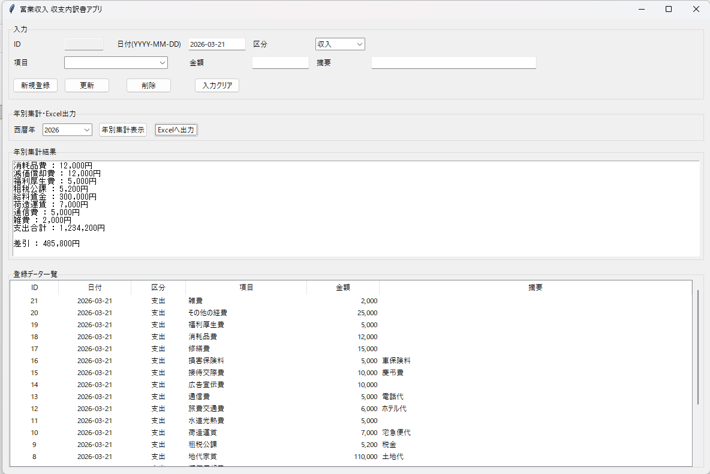
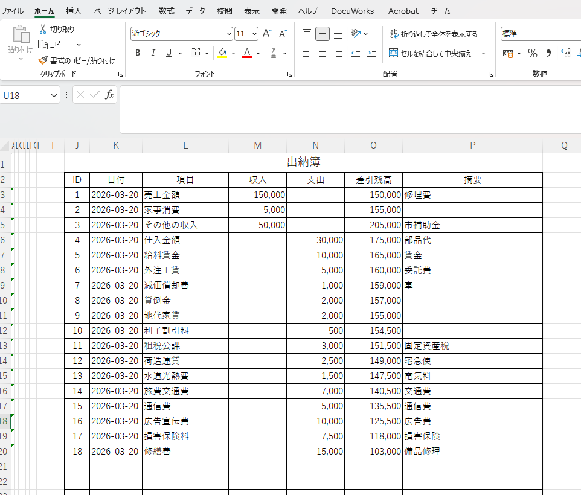
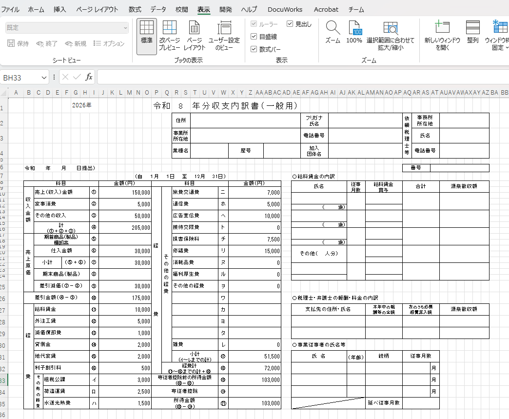

作った理由
収支内訳書は、入力や転記、見直しに時間がかかりやすいと感じていました。 そこで、日々の記録から帳票づくりまでを少しでも楽にできるように、このアプリを作り始めました。
日々の収入・支出を入力して、収支内訳書づくりを分かりやすくするためのWindows用アプリです。 パソコンが得意でない方でも使いやすい形を目指して、AIのサポートを受けながら少しずつ改良しています。
手書きやExcelだけでは手間がかかりやすい収支整理を、できるだけやさしく、見やすく、続けやすくするために作ったアプリです。
収支内訳書は、入力や転記、見直しに時間がかかりやすいと感じていました。 そこで、日々の記録から帳票づくりまでを少しでも楽にできるように、このアプリを作り始めました。
難しい設定をできるだけ減らし、入力・確認・出力の流れが分かりやすいことを大切にしています。 はじめての方でも迷いにくい画面を目標にしています。
Pythonを使い、AIのサポートも受けながら改良しています。 小さく作って、使いながら直していく形で育てているアプリです。
メイン画面、Excelの出納簿（Sheet1）、収支内訳書（Sheet2）の画面です。

メイン画面・入力画面

Excel 出納簿（Sheet1）

Excel 収支内訳書（Sheet2）
ダウンロードしたWindows版ZIPファイルを解凍します。
フォルダ内の exe ファイルをダブルクリックして起動します。
必要事項を入力し、保存しながら内容を確認します。
集計や出力機能を使って、収支内訳書作成に活用します。
収支内訳書アプリ（Windows版）をダウンロードできます。
① ダウンロードしたZIPファイルを右クリック
→ 「すべて展開」を選択
② 展開先を決める（例：デスクトップ）
③ 展開されたフォルダを開く
※ ZIPの中のままでは実行できません
④ フォルダ内の「shushi_app.exe」をダブルクリックして起動
④ 「shushi_app.exe」をダブルクリック
※ 初回は「詳細情報 → 実行」を選択する場合があります
※ ダウンロード後はZIPファイルを解凍してご利用ください（Windows専用）
入力しやすい配置や、分かりやすい表示に少しずつ整えていく予定です。
帳票出力、印刷、Excel連携などをより使いやすくしていくことを考えています。
今後は家計簿アプリや作業日報アプリなども、このサイトで順次紹介していく予定です。